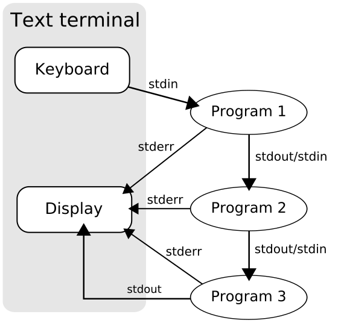

<!DOCTYPE html>
<html lang="en">
  <head>
    <meta charset="utf-8" />
    <meta name="viewport" content="width=device-width, initial-scale=1.0, maximum-scale=1.0, user-scalable=no" />

    <title>Tech Lunch Terminal</title>
    <link rel="shortcut icon" href="./favicon.ico"/>
    <link rel="stylesheet" href="./dist/reveal.css" />
    <link rel="stylesheet" href="./dist/theme/night.css" id="theme" />
    <link rel="stylesheet" href="./css/highlight/zenburn.css" />
    <link rel="stylesheet" href="./_assets/./lib/asciinema-player.css" />
    <link rel="stylesheet" href="./_assets/./style.css" />

  </head>
  <body>
    <div class="reveal">
      <div class="slides"><section  data-markdown><script type="text/template">

## Tech Lunch : Terminal

<br />
<br />

*21/08/2019*

**Benjamin Digeon**

Clever Age North America
</script></section><section ><section data-markdown><script type="text/template">
## Human Computer Interaction

A little bit of history

<aside class="notes"><p>IHM in French, who use Machine insteed of Computer</p>
</aside></script></section><section data-markdown><script type="text/template">
### Inputs / Outputs

- How to pass data and/or commands to a machine ?
- How to receive information from a machine ?
</script></section><section data-markdown><script type="text/template">
<!-- .slide: data-background="./img/Punched_card_program_deck.agr.jpg" data-state="dimbg" data-background-opacity="0.4" -->
#### Punched card

- Invented in **1725** for the control of a loom.
<!-- .element: class="fragment" data-fragment-index="1" -->

- Then used for playing back performances on a harmonium in **1881**.
<!-- .element: class="fragment" data-fragment-index="2" -->

- *Herman Hollerith* invented a electromechanical punched card tabulator used in the **1890** United States Census.
<!-- .element: class="fragment" data-fragment-index="3" -->

- His company was later amalgamated with others then renamed in **1924** the *International Business Machines Corporation*.
<!-- .element: class="fragment" data-fragment-index="4" -->

<aside class="notes"><p>So for now we just talk about tabulator, electromechanical computer are invented around 1938, then vacuum tubes and digital electronic circuits in 1942. Principle of the modern computer was proposed by Alan Turing in his seminal 1936 paper and first run in 1948.</p>
</aside></script></section><section data-markdown><script type="text/template">
<!-- .slide: data-background="./img/teleprinter-Siemens-t37h.jpg" data-state="dimbg" data-background-opacity="0.4" -->
#### Teleprinter (TTY)

- Used to replace the morse code, first implementation in **1844**.
<!-- .element: class="fragment" data-fragment-index="1" -->

- A complex character encoding scheme design for machines.
<!-- .element: class="fragment" data-fragment-index="2" -->

- **One person** who knows how to use a keyboard can replace **2 trained Morse code operators**.
<!-- .element: class="fragment" data-fragment-index="3" -->

- Also works when no operator is present for the reception.
<!-- .element: class="fragment" data-fragment-index="4" -->

<aside class="notes"><p>A lot of things remain today, it&#39;s the origin of the command-line interface.</p>
</aside></script></section><section data-markdown><script type="text/template">
<!-- .slide: data-background="./img/macintosh.jpg" data-state="dimbg" data-background-opacity="0.4" -->
#### Keyboard, Monitor and Mouse

- When the CRT screens become available migration from TTY to screen + keyboard
- Then when graphical interface arrive add the mouse (apple)

<aside class="notes"><p>&quot;glass tty&quot; // TODO</p>
</aside></script></section></section><section ><section data-markdown><script type="text/template">
## UNIX

<br />

> UNIX is very simple, it just needs a genius to understand its simplicity.
>
> **Dennis Ritchie**

<aside class="notes"><p>Creator of the C programming language and the Unix operating system</p>
</aside></script></section><section data-markdown><script type="text/template">


<aside class="notes"><p>History of Unix systems (simplify), today Linux, BSD &amp; MacOS, components architecture</p>
</aside></script></section><section data-markdown><script type="text/template">
### Architecture

- Kernel
<!-- .element: class="fragment fade-out" data-fragment-index="1" -->

- Development environment
<!-- .element: class="fragment fade-out" data-fragment-index="1" -->

- Commands
<!-- .element: class="fragment grow" data-fragment-index="1" -->

- Documentation
<!-- .element: class="fragment grow" data-fragment-index="1" -->

- And later a graphical interface
<!-- .element: class="fragment fade-out" data-fragment-index="1" -->

<aside class="notes"><p>A Unix type system is a modulary system compose of differents components. A terminal is about commands and documentation. Fun fact : Windows was initialy a command in MS-DOS for launching a graphical interface.</p>
</aside></script></section><section data-markdown><script type="text/template">
### Everything is a file

- Documents
- Directories
- Hard-drives
- Modems
- Keyboards
- Printers
- Process
- Network communications

<aside class="notes"><p>Not really a file : more accurate description &quot;Everything is a file descriptor&quot;</p>
</aside></script></section><section data-markdown><script type="text/template">
### Processes

Each process have :

- PID
- User
- Command

<aside class="notes"><p>PID0 system</p>
</aside></script></section><section data-markdown><script type="text/template">
### Users

- Multi-user system
- A special user named root who is the administrator and have every rights
</script></section><section data-markdown><script type="text/template">
### Permissions

- Each "file" has an owner, a group and some basics ACL
- More details in examples
</script></section></section><section ><section data-markdown><script type="text/template">
## Terminal 101

<aside class="notes"><p>Let&#39;s talk about basic usage of the terminal</p>
</aside></script></section><section data-markdown><script type="text/template">
### MacOS default Terminal


<aside class="notes"><p>I&#39;m gonna take the example of MacOS for now, 2 options the default and the more advanced terminal</p>
</aside></script></section><section data-markdown><script type="text/template">
### iTerm


<aside class="notes"><p>And a lot of custom configuration</p>
</aside></script></section><section data-markdown><script type="text/template">
### RTFM

```bash
man man
```

<asciinema-player src="./casts/man.cast" rows=30 cols=120 poster="npt:0:01"></asciinema-player>

<aside class="notes"><p>Read the fucking manual ! Most important command, read any command documentation</p>
</aside></script></section><section data-markdown><script type="text/template">
### Special characters

<br />

```bash
.  # the current working directory
.. # the parent directory to working directory
~  # your home directory
/  # the root (top-level) directory.
   # This is also the separator for directories
*  # a wildcard meaning any string of characters
?  # a wildcard meaning any single character
```
</script></section><section data-markdown><script type="text/template">
### Some commands

<br />

```bash
ls                # List files in this directory
pwd               # Where am i ?
cd                # Change directory
file filename.ext # What is this file ?
touch filename    # Create a file
mkdir directory   # Create a directory
clear             # Clear the screen (ctrl+l)
cp file1 file2    # Copy
mv file ~/tmp/    # Move
rm file           # Remove
rmdir directory   # Remove empty directory
```

<br />

Most commands support autocompletion with ↹

<aside class="notes"><p>Basic commands, a litle live coding for explaing that a litle more, use of man, tab and options. Talk about invisibles files and folder</p>
</aside></script></section><section data-markdown><script type="text/template">
### More commands

<br />

```bash
cat  # Read file
more # Read file ++
less # Read file +++
tail # Read end lines
head # Read first lines
wc   # Count
```

<aside class="notes"><p>Explain &gt; &amp; &gt;&gt;</p>
</aside></script></section><section data-markdown><script type="text/template">
### Permision

<br />

```bash
chmod # Change file modes or ACL
chown # Change file owner and group
```

<aside class="notes"><p>ACL: Access Control Lists</p>
</aside></script></section><section data-markdown><script type="text/template">
### Interrupt keys

- **ctrl C** : interrupts whatever is currently running.
- **ctrl Z** : puts a foreground process into the background.
- **ctrl S** : suspends current terminal
- **ctrl Q** : resumes current terminal
</script></section><section data-markdown><script type="text/template">
### Input and ouputs

<br />


<br />

```bash
cat 'doesnotexist.txt' 2>/dev/null
```
</script></section><section data-markdown><script type="text/template">
### Output codes

<br />

- A program has always an exit code
  - **0** if success
  - **1** to **255** anything else
- Read the manual for each program

<br />

```bash
cat file.txt
echo $?
cat doesnotexist.txt
echo $?
```
</script></section><section data-markdown><script type="text/template">
### Redirecting

```bash
echo 'toto' > file.txt  # Redirects
echo 'toto' >> file.txt # Append
more < terminal.md      # Take input
command1 | command2     # Pipe stdout to stdin
```

<aside class="notes"><p>Pipe explaining in the next slide</p>
</aside></script></section><section data-markdown><script type="text/template">
### Piping



<aside class="notes"><p><code>ps -A | grep chrome</code></p>
</aside></script></section><section data-markdown><script type="text/template">
### Processes

<br />

```bash
ps   # Display processes status
top  # See information about processes
htop # Top +++
```
</script></section><section data-markdown><script type="text/template">
### Signals

<br />

```bash
kill -9 badProcessPID
```

<br />

- `3` QUIT (quit)
- `6` ABRT (abort)
- `9` KILL (non-catchable, non-ignorable kill)
</script></section><section data-markdown><script type="text/template">
### Xargs

<br />

```bash
# When testing always use xargs -t

echo 'one two three' | xargs mkdir
find /tmp -mtime +14 | xargs rm
```
</script></section></section><section ><section data-markdown><script type="text/template">
<!-- .slide: data-background="./img/thank-you-jeanu-reeves.gif" data-state="dimbg" -->
# Thank you !
</script></section><section data-markdown><script type="text/template">
# Questions ?</script></section></section></div>
    </div>

    <script src="./dist/reveal.js"></script>

    <script src="./plugin/markdown/markdown.js"></script>
    <script src="./plugin/highlight/highlight.js"></script>
    <script src="./plugin/zoom/zoom.js"></script>
    <script src="./plugin/notes/notes.js"></script>
    <script src="./plugin/math/math.js"></script>
    <script>
      function extend() {
        var target = {};
        for (var i = 0; i < arguments.length; i++) {
          var source = arguments[i];
          for (var key in source) {
            if (source.hasOwnProperty(key)) {
              target[key] = source[key];
            }
          }
        }
        return target;
      }

      // default options to init reveal.js
      var defaultOptions = {
        controls: true,
        progress: true,
        history: true,
        center: true,
        transition: 'default', // none/fade/slide/convex/concave/zoom
        plugins: [
          RevealMarkdown,
          RevealHighlight,
          RevealZoom,
          RevealNotes,
          RevealMath
        ]
      };

      // options from URL query string
      var queryOptions = Reveal().getQueryHash() || {};

      var options = extend(defaultOptions, {"transition":"slide","slideNumber":"c/t"}, queryOptions);
    </script>

    <script src="./_assets/./lib/asciinema-player.js"></script>

    <script>
      Reveal.initialize(options);
    </script>
  </body>
</html>
